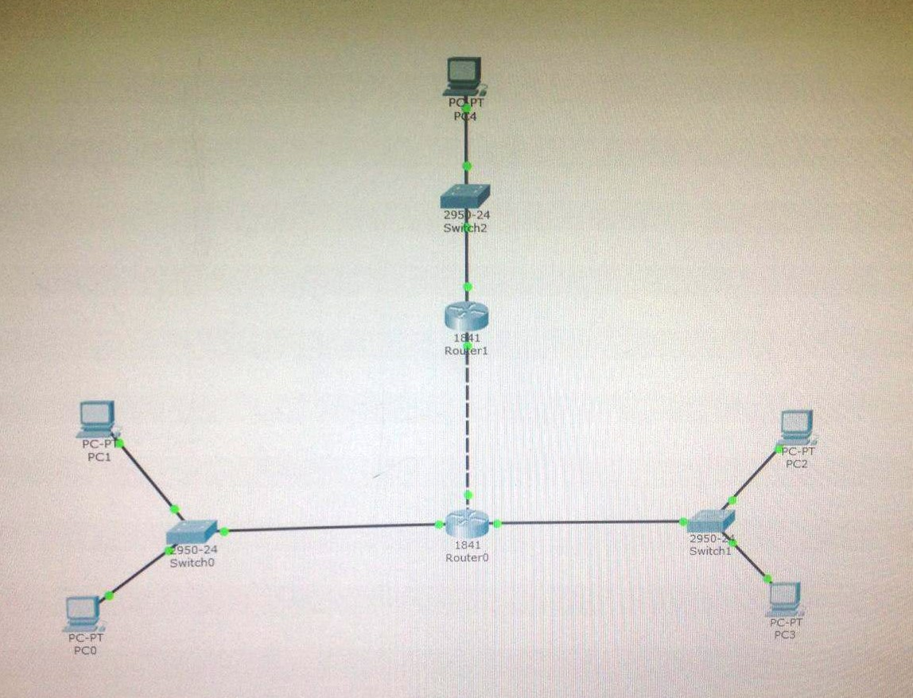

Лабораторная работа №1
Экосистема разработки программ с открытым кодом
Создана личная страница с использованием html/css. Произведена работа с git и github.
Лабораторная работа №2
Разработка простого веб-приложения
Приложение находится в разработке. Название проекта: Mirry.
В команде занимаюсь администрированием, а так же являюсь исследовательницей.
Лабораторная работа №3
Работа с симулятором Cisco Packet Tracer и Cisco IOS.

Подготовка к экзамену
Самооценка прохождения теста по инновациям, формулировка одного вопроса по теме "Интернет-технологии" в одной из форм, встречающихся в тесте. Презентации лекций и тесты расположены на Яндекс-Диске.